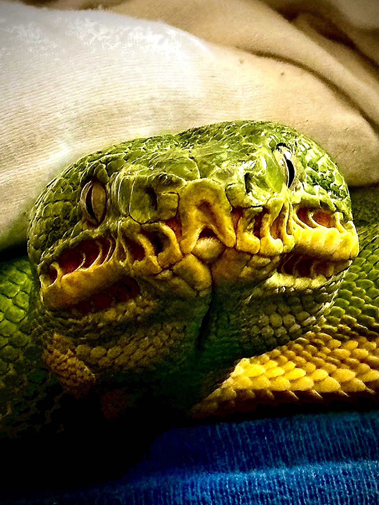

Status ochrony i dokumentacja
Corallus caninus występuje w północnej części Ameryki Południowej, m.in. w Gujanie, Surinamie, Wenezueli i północnej Brazylii. Gatunek jest objęty międzynarodową kontrolą handlu CITES. W praktyce hodowlanej legalne pochodzenie i kompletność dokumentacji są równie ważne jak kondycja zwierzęcia.
Warto odróżniać Corallus caninus od Corallus batesii. W handlu historycznie oba taksony bywały traktowane łącznie jako „Emerald Tree Boa”, dlatego przy zwierzętach hodowlanych znaczenie ma dokumentacja i wiarygodne pochodzenie.
Corallus caninus — Northern Emerald Tree Boa
Corallus caninus to wyspecjalizowany nadrzewny dusiciel północnej Ameryki Południowej. Intensywna zieleń dorosłych, białe znaczenia, chwytny ogon, masywna głowa, termoreceptory i niezwykle długie przednie zęby tworzą aparat nocnego drapieżnika z zasadzki.
Northern jest zwykle mniejszy od dużych C. batesii.
Spoczynek w pętlach i nocne polowanie z zasadzki.
Samica rodzi żywe młode.
Dołki wargowe wykrywają promieniowanie cieplne zdobyczy.
Wyjątkowe zęby
Corallus caninus ma bardzo długie przednie zęby jak na niejadowitego węża. Pomagają utrzymać zdobycz przechwyconą z gałęzi, ale oznaczają też, że ukąszenie może powodować głębokie rany punktowe. Brak jadu nie oznacza braku ryzyka.
Zmiana koloru
Noworodki mogą być czerwone, pomarańczowe lub żółtawe i dopiero z rozwojem przechodzą do zieleni. Podobieństwo do Morelia viridis jest przykładem konwergencji ewolucyjnej, a nie bliskiego pokrewieństwa.
Temperament
Trafniej mówić o defensywności i reaktywności niż o agresji. Nocą ciepły poruszający się obiekt w zasięgu może wyzwolić błyskawiczny atak. W dzień wiele prawidłowo utrzymywanych osobników jest spokojniejszych, ale różnice indywidualne są duże.
- chwytny ogon jest realnym punktem kotwiczenia;
- charakterystyczne pętle na żerdzi rozkładają masę i umożliwiają szybkie przejście do polowania;
- wysoka wilgotność naturalnego lasu współistnieje z przepływem powietrza — „mokro i szczelnie” nie odtwarza natury;
- żyworodność odróżnia go od składającego jaja Morelia viridis.

Corallus caninus w naturze
Gatunek związany jest z wilgotnymi lasami północnej Ameryki Południowej, szczególnie obszarem Guiana Shield i przyległą północną Amazonią. W zależności od ujęcia taksonomicznego zasięg obejmuje m.in. Gujanę, Surinam, Gujanę Francuską, Wenezuelę i północną Brazylię.
Trójwymiarowe środowisko
Życie na gałęziach nie oznacza jednej stałej wysokości. Wąż korzysta z układu żerdzi, lian i roślinności, a położenie determinuje temperaturę, wilgotność, ekspozycję i możliwość zasadzki. Z tego wynika nacisk Riethausena na odpowiednią wysokość i funkcjonalne żerdzie w terrarium.
Strategia polowania
W dzień zwykle odpoczywa w charakterystycznych pętlach. Po zmroku wysuwa przednią część ciała w pozycję ataku i wykorzystuje termorecepcję do wykrywania stałocieplnej zdobyczy. Jest drapieżnikiem z zasadzki, nie aktywnym łowcą pościgowym.
Caninus a batesii
Historyczne traktowanie Amazon Basin i Northern jako jednego gatunku spowodowało mieszanie informacji o rozmiarach, temperaturach i biologii. V11 zachowuje rozdzielenie obu taksonów. Dla hodowcy ma to znaczenie praktyczne: nie kopiujemy automatycznie protokołu większego Amazon Basin do Northern.
Terrarium dla Corallus caninus — architektura nadrzewnego mikroklimatu
U Corallus caninus żerdź jest w praktyce główną powierzchnią życiową, a terrarium ma umożliwiać wybór pomiędzy różnymi mikroklimatami. Jörg Riethausen zwraca szczególną uwagę na wysokość potrzebną do naturalnej pozycji łowieckiej i sam stosuje obecnie zbiorniki około 140 cm szerokości × 100 cm wysokości × 60 cm głębokości. EmeraldTreeBoas.org opisuje 122 × 61 × 61 cm jako często stosowane minimum, ale wskazuje, że wyższe formaty 122 × 61 × 122 cm znacząco zwiększają głębokość gradientu i wybór zachowania.
1. Materiał terrarium — co sprawdza się najlepiej?
Spienione PVC / Kömacell
Riethausen buduje swoje zbiorniki z około 15 mm spienionego PVC. Materiał dobrze izoluje, nie chłonie wody, jest łatwy do wiercenia i montażu wyposażenia. EmeraldTreeBoas.org także wskazuje wysokiej jakości PVC jako preferowany materiał dla ETB ze względu na odporność na wilgoć, stabilność parametrów i łatwość dezynfekcji.
Sklejka / drewno całkowicie uszczelnione
Może działać równie dobrze, jeśli każda powierzchnia i krawędź zostanie trwale zabezpieczona. Dobrze wykonane drewno izoluje bardzo dobrze, ale wilgoć wnikająca w niedokładnie zabezpieczone miejsce prowadzi do pęcznienia, pleśni i utraty higieny.
Szkło
Jest łatwe do czyszczenia, ale słabiej izoluje i trudniej utrzymać jednocześnie stabilną temperaturę oraz wilgotność. W dużych zbiornikach jest ciężkie. Może działać, jednak PVC daje większą kontrolę nad mikroklimatem i łatwiejszy montaż żerdzi.
2. Projekt gradientu — najważniejsza część terrarium
EmeraldTreeBoas.org zaleca budować gradient diagonalny: górna część strony ciepłej jest najcieplejsza i zwykle nieco suchsza, a niższa część strony chłodnej — chłodniejsza i bardziej wilgotna. Dzięki temu wąż wybiera nie tylko temperaturę, lecz równocześnie wilgotność, światło i stopień osłony.
Powinna znajdować się w górnej części, ale nie bezpośrednio przy suficie. Miejsce dobiera się pomiarem: grzbiet zwiniętego węża ma znajdować się w docelowym zakresie temperatury bez kontaktu z panelem lub lampą.
Co najmniej jedna stabilna żerdź przejściowa i połączenia ukośne pozwalają przejść pomiędzy strefami bez schodzenia na podłoże.
Tu warto dać gęstszą osłonę roślinną i wizualną. To strefa odwrotu, nie „gorsza żerdź”.
3. Żerdzie — średnica, długość i faktura
EmeraldTreeBoas.org wskazuje, że dorosłe Corallus zwykle preferują żerdzie nieco cieńsze niż najszerszy przekrój ciała. Główna żerdź powinna biec przez większość długości terrarium, aby całe ciało w pozycji „saddle coil” miało pełne podparcie. Dodatkowe żerdzie mogą być krótsze i mieć inne średnice.
Riethausen obserwował dorosłą samicę w Gujanie na gałęzi szacowanej na około 1,5 cm średnicy i w hodowli preferuje raczej cienkie, szorstkie żerdzie niż grube rury. To nie znaczy, że każda dorosła samica musi dostać żerdź 15 mm — najlepsza praktyka to zaoferowanie kilku średnic i obserwowanie wyboru konkretnego zwierzęcia.
Naturalne drewno
Daje świetną fakturę i zmienność średnicy. Źródła różnią się co do niektórych gatunków drewna: Riethausen stosuje m.in. wiśnię, natomiast EmeraldTreeBoas.org wymienia wiśnię wśród drewna budzącego obawy chemiczne. Dlatego jako publiczną rekomendację bezpieczniej podawać dobrze zidentyfikowane, czyste i twarde drewno o utrwalonym zastosowaniu, np. klon, dąb, brzozę, buk, wierzbę czy magnolię.
PVC / syntetyczne
Rura PVC jest trwała i łatwa do dezynfekcji, ale zupełnie gładka daje za mało tarcia. Jeśli jest używana, powierzchnia powinna być teksturowana lub pokryta bezpiecznym materiałem poprawiającym chwyt.
Żywica / druk 3D
Teksturowane żerdzie z żywicy lub odpowiednich tworzyw są bardzo praktyczne: nie gniją, mogą mieć naturalną fakturę i łatwo je myć. Modułowe uchwyty 3D ułatwiają zmianę wysokości bez przebudowy terrarium.
Bez kompromisu: żadna żerdź nie może się obracać, wyraźnie uginać ani być mocowana wyłącznie na przyssawkach. Przyssawki z czasem tracą przyczepność w wilgotnym środowisku i nie są właściwym mocowaniem dla głównej żerdzi.
4. Roślinność i osłona wizualna
Riethausen wykorzystuje głównie solidne sztuczne rośliny, ponieważ łatwo je dezynfekować. Z kolei EmeraldTreeBoas.org bardzo mocno podkreśla funkcję żywej roślinności: stabilizację wilgotności, tworzenie gradientu światła i przede wszystkim poczucie bezpieczeństwa.
Rośliny z centrum ogrodniczego nie powinny trafiać prosto do terrarium. EmeraldTreeBoas.org zaleca usunąć ziemię produkcyjną, dokładnie wypłukać korzenie, przesadzić do czystego podłoża bez nawozów i odczekać 4–8 tygodni, aby ograniczyć ryzyko pozostałości środków systemicznych. Należy unikać roślin z drażniącym sokiem, zwłaszcza Euphorbia.
5. Kryjówki — u Corallus przede wszystkim kryjówka wizualna
Najważniejsze jest, aby wąż mógł czuć się osłonięty na żerdzi. Roślinność, panele korkowe i odpowiednio rozmieszczone liście powinny tworzyć półotwarte strefy, w których zwierzę nadal może termoregulować. Najgęstsza osłona może znajdować się po stronie chłodniejszej; ciepły koniec nie powinien być tak zarośnięty, żeby zasłonić źródło ciepła, UVB lub wentylację.
6. Podłoże i dno
Riethausen u dorosłych stosuje około 5 cm włókna kokosowego, a u młodych podkłady jednorazowe lub ręcznik papierowy — przede wszystkim dlatego, że ułatwia to kontrolę nawet małych ilości moczu i kału. Oba podejścia są logiczne. Naturalistyczne podłoże zwiększa bufor wilgotności i amortyzuje ewentualny upadek; podkład daje maksymalną kontrolę higieny. W obu systemach nie wolno dopuścić do przewlekle mokrego, beztlenowego dna.
7. Wentylacja — projektuj ją razem z wilgotnością
Najlepiej działa wentylacja krzyżowa: np. dopływ niżej z jednej strony i odpływ wyżej po stronie przeciwnej. Ciepłe powietrze unoszące się ku górze wspomaga naturalny ruch. EmeraldTreeBoas.org podkreśla, że odpowiedzią na zbyt niską wilgotność nie powinno być po prostu „zamykanie wszystkich otworów”, ponieważ stojące, wilgotne powietrze zwiększa obciążenie mikrobiologiczne.
8. Przykładowy układ dorosłego Corallus
długa, stabilna, lekko osłonięta liśćmi
łączy ciepłą i chłodną część
więcej roślinności, wyższa wilgotność lokalna
strefa serwisowa i bufor wilgotności, nie główna strefa życia
Powyższe procenty są praktycznym schematem projektowym Gonzo Exotics, a nie „obowiązkowymi” wartościami z publikacji. Ostateczną wysokość żerdzi ustala się na podstawie realnych pomiarów temperatury, UVI, zachowania i rozmiaru konkretnego osobnika.
Test profesjonalnego terrarium Corallus
Temperatura, wilgotność, zraszanie i przesuszanie — praktyka hodowlana
W V8 przyjmujemy konserwatywny program oparty głównie na praktyce Jörga Riethausena oraz porównaniu z innymi źródłami specjalistycznymi. Nie zalecamy rutynowej temperatury 20°C w nocy. Riethausen opisuje u swoich zwierząt około 25°C w nocy i maksymalnie około 32°C w dzień, przy czym najważniejszy jest gradient i możliwość wyboru żerdzi o różnych temperaturach.
Dlaczego nie utrzymujemy stałych 90% RH?
Riethausen zwraca uwagę, że podczas obserwacji dzikiego Corallus w Gujanie wilgotność w konkretnym miejscu była poniżej 50%. W terrarium problemem jest również brak tak intensywnej wymiany powietrza jak w lesie. Połączenie wysokiej temperatury, wysokiej wilgotności i resztek organicznych sprzyja rozwojowi bakterii, grzybów i biofilmu.
Praktyczny cykl dobowy dla dorosłych
Wieczór
Po wygaszeniu świateł krótki cykl zraszania. RH może wzrosnąć do około 75–90%. Zraszanie ma stworzyć chwilowy impuls wilgotności i krople do picia, nie zamoczyć całego terrarium na wiele godzin.
Noc
Wilgotność utrzymuje się wyżej po zraszaniu, ale przez noc powinna stopniowo spadać. Temperatura robocza około 25°C.
Poranek
Powierzchnie mogą być jeszcze lekko wilgotne, ale powinien być widoczny trend wysychania. Dodatkowe poranne zraszanie tylko wtedy, gdy zwierzę realnie wymaga większego nawodnienia.
Dzień
Faza przesuszenia: większość powierzchni sucha, RH często około 45–60%, przy nieprzerwanym dostępie do świeżej wody i prawidłowej wentylacji.
Okres wylinki
Riethausen opisuje podniesienie RH do około 90% na kilka dni w okresie poprzedzającym wylinkę. To nie jest jego całoroczny poziom bazowy. Po zakończeniu wylinki wraca do normalnego cyklu.
Różne szkoły hodowli
EmeraldTreeBoas.org podaje wyższe wartości, typowo 75–90% RH. Nie należy przedstawiać jednej szkoły jako jedynej możliwej. Różnica wynika m.in. z wentylacji, wielkości zbiornika, temperatury, rodzaju podłoża i sposobu zraszania. Na stronie Gonzo Exotics podkreślamy to, co łączy dobre systemy: stabilne temperatury, dostęp do wody, duża wymiana powietrza i brak permanentnie mokrego mikroklimatu.
Karmienie Corallus caninus — szczegółowy poradnik
Northern ETB jest oszczędnym energetycznie drapieżnikiem z zasadzki. Najczęstszy błąd to zbyt duża zdobycz podawana zbyt często. Dorosły powinien być zwarty i muskularny, nie ciężki od tłuszczu.
Naturalna dieta obejmuje małe kręgowce, szczególnie ssaki; ptaki mogą być składnikiem, ale stereotyp „ptakożercy” jest uproszczeniem.
Po pierwszej wylince, często około 5–7 dni przy prawidłowym trawieniu.
Bez przyspieszania wzrostu.
Interwał rośnie wraz z wielkością ofiary.
Dostosować do kondycji i aktywności.
Rozmiar ofiary
Najbezpieczniej wybierać zdobycz o średnicy zbliżonej do lub nieco mniejszej od najszerszej części ciała. Ogromne wybrzuszenie nie jest celem. Mniejszy posiłek łatwiej strawić i łatwiej kontrolować bilans energetyczny.
Mrożone/rozmrożone
Preferowane u ustabilizowanego osobnika, ponieważ eliminuje ryzyko pogryzienia przez żywego gryzonia. Ofiarę całkowicie rozmrażamy i umiarkowanie ogrzewamy; sprawne termoreceptory zwykle nie wymagają agresywnego drażnienia.
- Karm po zmroku.
- Używaj długich kleszczy.
- Nie wciskaj ofiary w pysk.
- Po chwycie pozwól wykonać pełne owinięcie.
- Po posiłku zapewnij spokój i pełny gradient termiczny.
Nawodnienie
To część programu żywienia. Woda powinna być łatwo dostępna, a cykl zraszania umożliwiać picie kropli. Odwodnionego węża najpierw stabilizujemy — duży posiłek nie jest metodą „naprawy”.
Odmowa i regurgitacja
Odmowa może towarzyszyć wylince i rozrodowi. Jeśli pojawia się chudnięcie, osłabienie chwytu, problemy oddechowe lub regurgitacja, potrzebna jest diagnostyka. Po regurgitacji nie ponawiamy karmienia następnego dnia.
Samica hodowlana
Nie stosujemy power feedingu przed sezonem. W ciąży apetyt może zaniknąć. Po porodzie karmienie wraca stopniowo, a decyzja o kolejnym sezonie zależy od odbudowy pełnej kondycji.
Rozmnażanie Corallus caninus — od przygotowania pary do porodu
Corallus caninus jest żyworodny i rozród obciąża samicę znacznie dłużej niż u gatunków składających jaja. Dane zoologiczne wskazują zwykle 4–5 lat do dojrzałości samic i 3–4 lata u samców oraz ciążę trwającą około 6–7 miesięcy. Samice w naturze i hodowli często nie rozmnażają się corocznie. W praktyce rozsądny standard to co najmniej jeden pełny sezon regeneracji po porodzie.
1. Kwalifikacja pary do rozrodu
Dla Northern Corallus caninus nie ma jednej, dobrze potwierdzonej naukowo „minimalnej masy hodowlanej”, którą można stosować do wszystkich lokalności i linii. Dlatego priorytetem jest pełna dorosła budowa, stabilna masa, gruba muskulatura i odpowiedni zapas energii bez otyłości.
Popularny próg około 1500 g pochodzi głównie z praktyki Amazon Basin / C. batesii. Nie należy zmuszać drobniejszej północnej samicy do osiągnięcia tej wartości karmieniem.
Samiec powinien być pełnowymiarowy dla swojej linii, aktywny nocą i w dobrej kondycji. Podawane w literaturze hodowlanej około 800 g dotyczy przede wszystkim Amazon Basin; u Northern ważniejsza jest dojrzałość i stabilna sylwetka niż sama liczba na wadze.
Samicy nie łączymy, jeśli:
- nadal intensywnie rośnie i nie ma ustabilizowanej dorosłej sylwetki;
- jest świeżo po poprzedniej ciąży lub nie odbudowała masy i napięcia mięśniowego;
- ma nawracające problemy z odwodnieniem, jamą ustną, oddychaniem albo wylinką;
- jest otłuszczona — nadmiar energii nie zastępuje sprawności mięśni i wydolności;
- brak pewności co do stanu układu rozrodczego po wcześniejszych komplikacjach.
2. Roczny rytm — nie „ciągła pora deszczowa”
W naturze informacje o dokładnym terminie rozrodu C. caninus są ograniczone i nie zawsze spójne, natomiast obserwacje zoologiczne potwierdzają sezonowość. W hodowli lepiej stosować łagodny rytm roczny niż gwałtowne zmiany. Jörg Riethausen podkreśla znaczenie stabilnego gradientu, a jego standardowa hodowla pracuje przy około 25°C nocą i wyraźnie cieplejszym dniu.
Fotoperiod około 12 h. Noc około 25–26°C. Normalny cykl wilgotności 45–70% z chwilowym wzrostem po zraszaniu. Samice po porodzie przede wszystkim regenerują się.
Ważenie, dokumentacja, kontrola nawodnienia i kału. Nie „ładujemy” samicy pokarmem przed sezonem.
Stopniowo skracamy światło z 12 h do około 11–11,5 h. Noc można łagodnie obniżyć do około 24,5–25°C.
Fotoperiod około 11 h. Noc około 24–25°C, dzień z pełnym dostępem do ciepłej żerdzi. Wieczorne zraszanie może być odrobinę intensywniejsze, ale dzień pozostaje fazą przesuszania.
Po wyraźnej owulacji kończymy łączenia. Po post-ovulation shed samica przechodzi w stabilne warunki ciążowe.
Termin porodu jest zmienny. U C. caninus dane zoologiczne wskazują ogólnie około 6–7 miesięcy ciąży.
3. Parametry w sezonie rozrodczym
Steve Volk u Amazon Basin stosował nocne spadki nawet do około 22°C. Tego zakresu nie przenosimy automatycznie na Northern C. caninus. Jeżeli para nie reaguje na łagodne sezonowanie, pierwszym krokiem jest ocena dojrzałości, kondycji, płodności samca i rzeczywistych pomiarów, a nie dalsze schładzanie.
4. Wilgotność podczas łączeń
Krótki oprysk może podnieść RH w okolice 75–85%, dostarczając kropli do picia i bodźca środowiskowego.
Nie zamykamy wentylacji tylko po to, żeby „utrzymać 90%”.
Większość powierzchni powinna wyschnąć, a RH często wraca w okolice 45–60%.
W czasie kopulacji nie trzeba podnosić RH do stałych 90%. Najważniejsze są nawodnienie i przewidywalny rytm dobowy. Długotrwałe mokre żerdzie przy słabej wentylacji nie zwiększają „płodności”, za to zwiększają obciążenie mikrobiologiczne.
5. Jak łączyć Corallus caninus — krok po kroku
- Łącz w terrarium samicy. To najczęściej stosowany model w hodowli Emerald Tree Boa.
- Przenieś samca w ciągu dnia. Zmniejsza to ryzyko uderzenia z odruchu pokarmowego.
- Pierwsza godzina jest kontrolowana. Normalne są intensywne ruchy samca, obwąchiwanie i zmiana ułożenia. Gryzienie i realna walka oznaczają natychmiastowe rozdzielenie.
- Nigdy nie wkładaj dwóch aktywnych samców do jednej samicy. U Emerald Tree Boa może dochodzić do poważnych walk samców.
- Jeśli para jest spokojna, pozostaw ją 5–7 dni. Kopulacje zwykle odbywają się nocą i mogą trwać wiele godzin.
- Rozdziel na kilka dni. Daje to czas na odpoczynek, nawodnienie i ewentualne karmienie poza wspólnym terrarium.
- Powtarzaj cykl przez kilka tygodni, jeśli są zachowania godowe i samica nie przeszła jeszcze wyraźnej owulacji.
Obserwuj, nie przeszkadzaj
Kamera z podczerwienią jest niezwykle użyteczna. Pozwala potwierdzić faktyczne kopulacje bez nocnego otwierania terrarium. Sama obecność dwóch węży na jednej żerdzi nie jest dowodem skutecznego krycia.
6. Owulacja i moment zakończenia łączeń
Po kilku tygodniach skutecznych kopulacji samica może rozwinąć duży obrzęk środkowej części ciała przypominający bardzo duży posiłek. W praktyce hodowlanej Emerald Tree Boa taki obraz może utrzymywać się około 12–24 godzin. Steve Volk opisywał post-ovulation shed około 30 dni po owulacji u Amazon Basin. Dla Northern traktujemy to jako użyteczny punkt orientacyjny, a nie zegar.
Po wyraźnej owulacji samca usuwamy i wracamy do stabilniejszej nocy około 25–26°C. Nie ma korzyści z wielotygodniowego pozostawiania samca przy ciężarnej samicy.
7. Prowadzenie ciężarnej samicy
Zapewnij ciepłą żerdź około 29–31°C i chłodniejsze miejsca. Samica sama reguluje czas wygrzewania.
Po zakończeniu sezonowania nie utrzymujemy silnego chłodzenia.
Świeża woda codziennie/regularnie i możliwość picia kropli po zraszaniu. Ciężarna samica nie może być odwodniona.
Wiele ciężarnych samic odmawia pokarmu. Nie próbujemy „przepychać” dużych posiłków.
Steve Volk podkreślał nawodnienie jako jeden z krytycznych elementów ciąży u Emerald Tree Boa. Nie oznacza to jednak konieczności stosowania komory deszczowej. Jeżeli samica pije, jest prawidłowo nawodniona, a terrarium ma dobry cykl wilgotności, stabilność jest ważniejsza niż dodatkowe manipulacje.
8. Kiedy spodziewać się porodu?
Corallus caninus rodzi żywe młode. Ogólne opracowania zoologiczne wskazują około 6–7 miesięcy ciąży i najczęściej 5–12 młodych, choć mioty mogą być większe. U Amazon Basin Steve Volk podawał około 130–180 dni od post-ovulation shed. Te zakresy pokazują, że nie należy wyznaczać jednej „daty porodu” na podstawie pierwszej kopulacji.
9. Ostatnie tygodnie
- ogranicz manipulowanie samicą do absolutnego minimum;
- sprawdź stabilność wszystkich żerdzi — ciężarna samica jest znacznie cięższa;
- utrzymuj dostęp do kilku temperatur, nie jednej „gorącej półki”;
- zapewnij świeżą wodę bardzo blisko preferowanej żerdzi;
- przygotuj pojemniki dla noworodków przed spodziewanym okresem porodu;
- nie zwiększaj wilgotności do stałych 90–100% w oczekiwaniu na poród.
10. Poród i noworodki
Noworodki przenosimy do osobnych, łatwych do kontrolowania pojemników z cienkimi żerdziami. Pierwsze karmienie proponujemy po pierwszej wylince. U Northern C. caninus start żywieniowy bywa często łatwiejszy niż u Amazon Basin, ale każdy neonat powinien być traktowany indywidualnie.
11. Regeneracja samicy po porodzie
Po porodzie samica potrzebuje stabilnych warunków, wody i stopniowego powrotu do żywienia. Nie planujemy kolejnego rozrodu następnego sezonu tylko dlatego, że samica szybko zaczęła jeść. U tego gatunku długotrwała ciąża i mobilizacja zapasów uzasadniają co najmniej sezon przerwy.
Sygnały alarmowe
Przewlekłe parcie bez porodu, nietypowe obrzęki, cuchnąca wydzielina z kloaki, osłabienie chwytu, szybka utrata kondycji, oddychanie z otwartym pyskiem lub długotrwałe zaleganie na dnie wymagają pilnej konsultacji z lekarzem weterynarii zajmującym się gadami. Przy żyworodnym Corallus zbyt późna reakcja na dystocję może być groźna dla samicy i młodych.
Corallus caninus — kompletny poradnik zdrowia i chorób
1. Choroby dróg oddechowych
U Corallus caninus objawy oddechowe należy traktować poważnie, ponieważ wąż długo potrafi maskować pogorszenie. Przyczyny obejmują bakterie, grzyby, pasożyty, wirusy oraz czynniki środowiskowe. Stała wysoka wilgotność przy słabej wentylacji zwiększa ryzyko problemów, ale samo „obniżenie wilgotności” nie jest leczeniem istniejącego zapalenia płuc.
- śluz/piana w jamie ustnej;
- oddychanie z otwartym pyskiem;
- świsty i nasilony wysiłek oddechowy;
- długie utrzymywanie głowy wysoko bez typowego zachowania łowieckiego;
- osłabienie chwytu i spadanie z żerdzi.
Diagnostyka cięższych przypadków powinna obejmować ocenę dolnych dróg oddechowych; w zależności od objawów RTG, endoskopię/płukanie, cytologię i posiew. Leczenie antybiotykowe „na ślepo” może nie trafić w patogen i utrudnić późniejszy posiew.
2. Serpentowirusy / nidowirusy
Najsilniejszy związek serpentowirusów z ciężką chorobą opisano u pytonów, ale wirusy z tej grupy wykrywano również u boa i innych węży. U Corallus caninus przy zapaleniu dróg oddechowych w dużej kolekcji warto omówić z lekarzem PCR w ramach diagnostyki różnicowej, szczególnie jeśli w tym samym obiekcie utrzymywane są pytony.
Nie ma swoistego, potwierdzonego leczenia przeciwwirusowego. Podejrzane osobniki izolujemy, a wynik PCR interpretujemy razem z kliniką i ewentualnie powtarzamy.
3. BIBD / reptarenawirusy — szczególnie ważne dla boa
Boid Inclusion Body Disease jest chorobą związaną z reptarenawirusami i stanowi jedno z najpoważniejszych zagrożeń zakaźnych w kolekcjach Boidae. Boa mogą przez długi czas pozostawać bezobjawowymi nosicielami. Objawy obejmują regurgitację, utratę masy, stomatitis, wtórne zapalenia płuc i zaburzenia neurologiczne.
Nie ma skutecznego leczenia przyczynowego BIBD. Profilaktyka opiera się na kwarantannie, higienie pomiędzy zwierzętami i odpowiedniej diagnostyce laboratoryjnej przed włączeniem nowego boa do kolekcji rozrodczej.
4. Stomatitis
Wczesne zapalenie jamy ustnej może wyglądać niepozornie: małe wybroczyny, zaczerwienienie dziąseł albo pojedynczy obrzęk. Zaawansowane przypadki dają serowatą wydzielinę, martwicę i nieprzyjemny zapach. U nadrzewnych boa przyczyną urazową może być także wielokrotne uderzanie pyskiem o szybę/kratę.
Leczenie obejmuje usunięcie martwych tkanek, diagnostykę mikrobiologiczną w odpowiednich przypadkach, antybiotyk dobrany przez lekarza oraz korektę temperatury, wentylacji i stresu.
5. Roztocze Ophionyssus natricis
Roztocze może ukrywać się pod łuskami, wokół oczu i w szczelinach terrarium. Objawy: nadmierna aktywność, częstsze moczenie, drażliwość, szorstka skóra, zatrzymane fragmenty wylinki i przy ciężkim obciążeniu anemia.
Traktuj infestację jako potencjalnie obejmującą cały pokój.
Papier + proste żerdzie + brak porowatych dekoracji do czasu eradykacji.
Preparat dobiera lekarz; współczesne publikacje opisują skuteczność izoksazolin.
Kontrola musi objąć także środowisko i kolejne stadia pasożyta.
6. Problemy z wylinką
Nieprawidłowa wylinka może być skutkiem odwodnienia, roztoczy, choroby ogólnej, nieprawidłowej wentylacji lub braku dobrych powierzchni do tarcia. U Corallus nie „naprawiamy” każdego problemu przez utrzymywanie 90–100% RH przez całą dobę. Najpierw oceniamy cykl wilgotności, picie i stan zdrowia.
Zatrzymanych okularów nie podważamy pęsetą. Powtarzające się zatrzymanie eyecaps wymaga sprawdzenia roztoczy, nawodnienia i chorób ogólnych.
7. Dermatitis, pęcherze, martwica i oparzenia
Stałe moczenie skóry na zabrudzonych powierzchniach może prowadzić do zapalenia skóry. Oparzenia zdarzają się przy nieosłoniętych emiterach albo panelach. Pierwszym krokiem jest usunięcie źródła urazu i przejście na sterylny, łatwy do kontroli system. Rozległe zmiany, pęcherze, sączenie, głęboka martwica lub zajęcie wielu łusek wymagają lekarza.
8. Wypadanie kloaki / jelita / narządów rozrodczych
Prolaps jest nagłym stanem wymagającym pomocy weterynaryjnej. Możliwe przyczyny obejmują zaparcie, pasożyty, biegunki, wysiłek rozrodczy i urazy. Tkankę należy do czasu transportu utrzymywać wilgotną i czystą, bez wciskania na siłę.
Weterynarz identyfikuje, jaki narząd wypadł, ocenia ukrwienie, redukuje obrzęk, odprowadza tkanki lub wykonuje zabieg, a następnie szuka przyczyny. Sama repozycja bez leczenia przyczyny sprzyja nawrotowi.
9. Pasożyty wewnętrzne
Badanie kału powinno być standardem nowego zwierzęcia. U węży spotyka się m.in. Kalicephalus, Strongyloides, ascaridy oraz pasożyty płucne Rhabdias. Ciężkie obciążenie może powodować chudnięcie, regurgitację, biegunkę, niedokrwistość lub objawy oddechowe. Leczenie dobiera się do konkretnego pasożyta.
10. Cryptosporidium serpentis
Przewlekła regurgitacja kilka dni po karmieniu, stopniowe wychudzenie i pogrubienie w okolicy żołądka wymagają wykluczenia gastric cryptosporidiosis. Obecnie nie ma pewnego leczenia eliminującego C. serpentis. Zwierzę dodatnie stanowi długoterminowe zagrożenie epidemiologiczne dla kolekcji.
11. Dystocja i problemy ciąży
Corallus jest żyworodny, więc problemem mogą być zatrzymane płody, nieprawidłowe jaja/ova, zapalenie układu rozrodczego lub dystocja. Nieprawidłowe parcie, szybkie osłabienie, utrzymujący się nienaturalny obrzęk lub cuchnąca wydzielina to sygnały alarmowe. Ultrasonografia jest szczególnie wartościowa, ponieważ pozwala ocenić płody i układ rozrodczy bez operacji.
12. Profilaktyka kolekcji Corallus
3–6 miesięcy lub dłużej zależnie od ryzyka; osobna przestrzeń, sprzęt i kolejność obsługi.
Na początku i kontrolnie po leczeniu.
Reptarenawirusy/BIBD szczególnie ważne w Boidae; serpentowirusy według ryzyka kolekcji.
Nie leczymy tylko jednego terrarium.
Myta często; biofilm w ciepłym środowisku powstaje szybko.
Masa, wylinki, kał, apetyt, leczenie i rozród.
13. Objawy wymagające pilnej konsultacji
Galeria Corallus caninus
{kind=link}
{kind=link}
{kind=link}
{kind=link}
{kind=link}
{kind=link}
{kind=link}
{kind=link}
{kind=link}
{kind=link}
Źródła i dalsza lektura
- The Reptile Database — taksonomia i zasięg Corallus caninus.
- CITES / UNEP-WCMC — Corallus caninus jest objęty CITES Appendix II jako przedstawiciel Boidae spp.; w UE odpowiednie regulacje należy sprawdzać przed obrotem.
- corallus-caninus.com — Jörg Riethausen — wieloletnia praktyka hodowlana, dane z wyprawy do Gujany i szczegółowe obserwacje terraryjne.
- Jean-Jacques Basin — wieloletnie doświadczenie hodowlane przywoływane w materiałach Jörga Riethausena.
- emeraldtreeboas.org — współczesne opracowania dotyczące wilgotności, wentylacji i dobrostanu Emerald Tree Boa.
- Literatura herpetologiczna — dane o ekologii rodzaju Corallus i naturalnym zasięgu północnych Emerald Tree Boa.